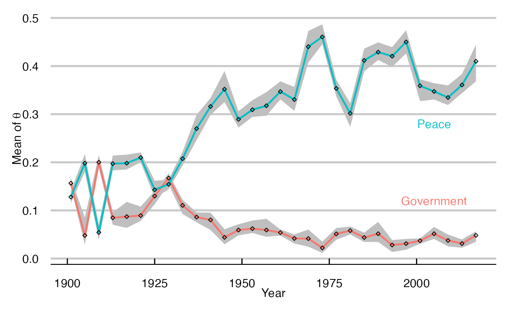

You can extract values used in a plot with the
values_fig() function. Here we have a time trend plot from
keyATM Dynamic.
out <- keyATM(
docs = keyATM_docs,
no_keyword_topics = 3,
keywords = keywords,
model = "dynamic",
model_settings = list(time_index = vars_period$Period,
num_states = 5),
options = list(seed = 250, store_theta = TRUE, thinning = 5)
)
fig_timetrend <- plot_timetrend(out, time_index_label = vars$Year, xlab = "Year")
fig_timetrend
The values_fig() function returns a tibble used to
create the plot.
values_fig(fig_timetrend)## # A tibble: 290 × 7
## time_index Topic Lower Point Upper time_index_raw state_id
## <int> <chr> <dbl> <dbl> <dbl> <int> <dbl>
## 1 1789 1_Government 0.100 0.113 0.125 1 1
## 2 1789 2_Congress 0.154 0.182 0.211 1 1
## 3 1789 3_Peace 0.0441 0.0618 0.0800 1 1
## 4 1789 4_Constitution 0.215 0.232 0.254 1 1
## 5 1789 5_ForeignAffairs 0.121 0.148 0.173 1 1
## 6 1793 1_Government 0.209 0.247 0.287 2 1
## 7 1793 2_Congress 0.0207 0.0699 0.0991 2 1
## 8 1793 3_Peace 0.0574 0.0876 0.112 2 1
## 9 1793 4_Constitution 0.257 0.312 0.388 2 1
## 10 1793 5_ForeignAffairs 0.0522 0.0819 0.112 2 1
## # ℹ 280 more rowsWe can use it to customize the figure.
library(ggplot2)
values <- values_fig(fig_timetrend)
values %>%
filter(Topic %in% c("1_Government", "3_Peace")) %>% # extract two topics
filter(time_index >= 1900) %>% # from 1900
ggplot(., aes(x = time_index, y = Point, group = Topic)) +
geom_ribbon(aes(ymin = Lower, ymax = Upper), fill = "gray75") +
geom_line(linewidth = 0.8, aes(colour = Topic)) +
geom_point(shape = 5, size = 0.9) +
xlab("Year") + ylab(expression(paste("Mean of ", theta))) +
annotate("text", x = 2005, y = 0.12, label = "Government", colour = "#F8766D") +
annotate("text", x = 2005, y = 0.28, label = "Peace", colour = "#00BFC4") +
ggthemes::theme_economist_white(gray_bg = FALSE) +
theme(legend.position = "none")
The values_fig() function works with other
keyATM plot functions. Check the reference for
details.